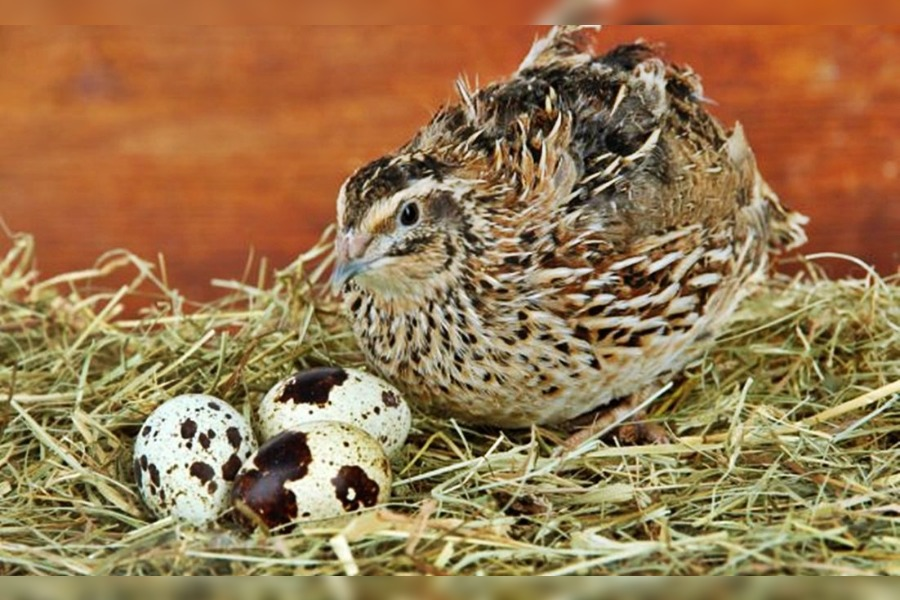
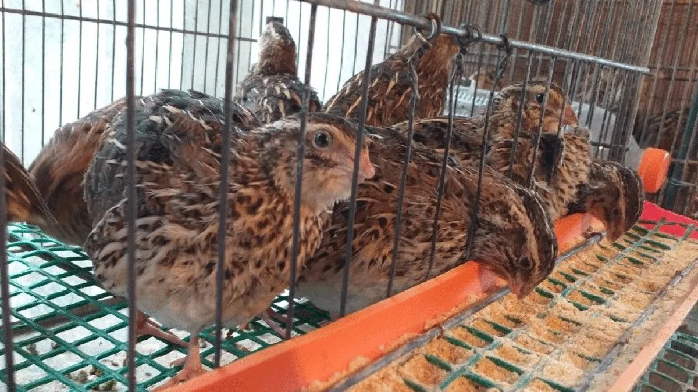

Bienvenido a nuestra página dedicada a la salud alimentaria con codornices. Aquí encontrarás información valiosa sobre los beneficios de incluir codornices en tu dieta.
Las codornices son una excelente fuente de proteínas y nutrientes esenciales. Además, son una opción deliciosa y versátil para mejorar tu alimentación.
Explora nuestras recetas y descubre cómo incorporar codornices de manera creativa en tus comidas diarias.